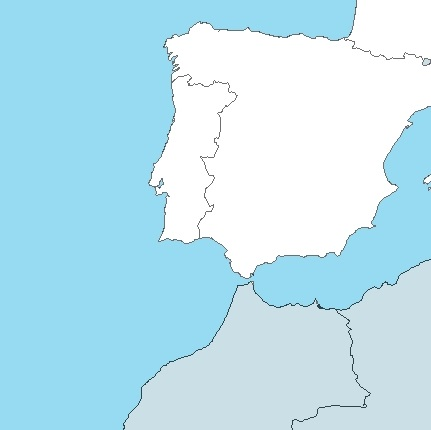

Decision Support Framework
Decision Support Framework

The MareFrame Decision Support Framework is a pragmatic planning process for moving towards an Ecosystem Approach to Fisheries Management. Click on the map of Europe to the left to see all case studies or explore the current case study below.
Case Study: Gulf of Cádiz
Análisis de escenarios de gestión
Loading...
Please wait 15 seconds for the content to completely load.
Loading...
Please wait 30 seconds for the content to completely load.
Loading...
Please wait 30 seconds for the content to completely load.